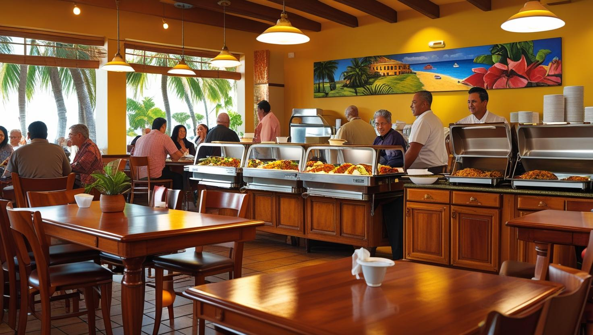

Sobre Nosotros
En Cafetería San Juan, nos apasiona ofrecerte una experiencia única con nuestros cafés artesanales y deliciosos pasteles. Nuestro equipo está comprometido a brindarte un servicio excepcional en un ambiente acogedor, donde cada visita se sienta como un cálido abrazo. Utilizamos ingredientes frescos y de la más alta calidad para asegurar que cada bocado y cada sorbo sea una delicia inolvidable. ¡Te invitamos a ser parte de nuestra historia y a disfrutar del sabor de lo auténtico!
